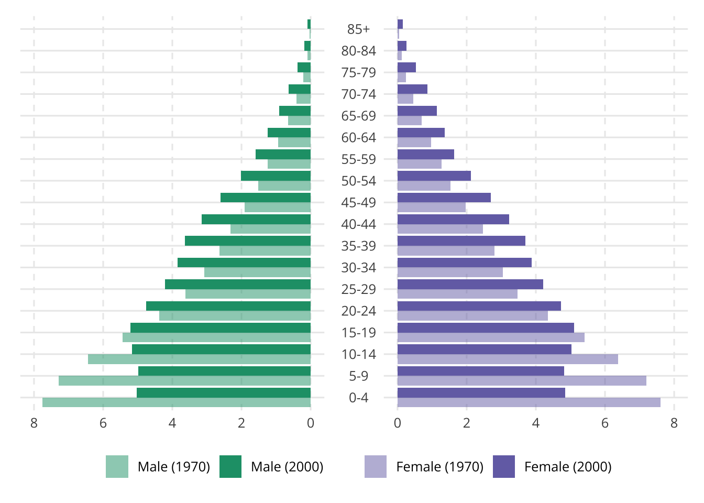

library(ggplot2)
library(data.table)
library(wpp2024)
# remotes::install_github("PPgp/wpp2024")Demographic Pyramids
A demographic pyramid is a graphical representation of the age and gender distribution of a population. It typically shows the population in horizontal bars, with males represented on the left and females on the right. Each bar represents a specific age group, and the length of the bar indicates the number of people in that group. Demographic pyramids are widely used in demographic analysis to visualize the structure of a population, providing valuable insights into trends like population growth, aging, and gender distribution.
These pyramids are crucial for understanding the socio-economic dynamics of a country, as they highlight the proportions of young versus older populations and reveal patterns related to fertility rates, life expectancy, and migration. By analyzing demographic pyramids, policymakers, businesses, and researchers can make informed decisions related to healthcare, education, and workforce planning. In this tutorial, we will demonstrate how to create demographic pyramids using R, leveraging the WPP 2024 dataset to analyze population structures in countries like Pakistan, Brazil, Japan, and Ireland.
data(popAge1dt)
# Brazil, Ireland, Pakistan, Japan
countries <- data.table(
country_code = c(392, 586, 372, 76),
name = c("Japan", "Pakistan", "Ireland", "Brazil")
)
sub <- popAge1dt[country_code %in% countries$country_code]# Create age-group data.frames for merges
df_age_group <- function(age_min = 0, age_max = 90, group_interval = 5) {
# Age-group auxiliary data.frames
group <- seq(age_min, age_max, group_interval)
interval <- findInterval(0:150, group, rightmost.closed = FALSE)
# Text labels for each group
label <- paste(group, (group - 1)[-1], sep = "-")
label[length(label)] <- paste0(age_max, "+")
age_label <- rep(label, each = group_interval)
age_label <- c(age_label, rep(paste0(age_max, "+"), 151 - length(age_label)))
# 5 year age groups 0-4 to 90+
age_group <- data.frame(
age = 0:150,
age_group = interval,
age_label = factor(age_label)
#age_label = factor(age_label, levels = age_label[order(interval)])
)
age_group <- age_group |>
dplyr::mutate(age_label = forcats::fct_reorder(age_label, age_group))
return(age_group)
}sub50 <- sub[year == 1950 & country_code == 392]
sub50 country_code name year age popM popF pop
<int> <char> <int> <int> <num> <num> <num>
1: 392 Japan 1950 0 1208.092 1148.878 2356.970
2: 392 Japan 1950 1 1174.236 1170.458 2344.694
3: 392 Japan 1950 2 1294.455 1290.571 2585.026
4: 392 Japan 1950 3 1278.061 1273.618 2551.679
5: 392 Japan 1950 4 1213.995 1204.389 2418.384
---
97: 392 Japan 1950 96 0.108 0.469 0.577
98: 392 Japan 1950 97 0.069 0.302 0.371
99: 392 Japan 1950 98 0.039 0.173 0.212
100: 392 Japan 1950 99 0.018 0.082 0.100
101: 392 Japan 1950 100 0.006 0.025 0.031dim_age <- df_age_group(age_min = 0, age_max = 90, group_interval = 5)
dim_age age age_group age_label
1 0 1 0-4
2 1 1 0-4
3 2 1 0-4
4 3 1 0-4
5 4 1 0-4
6 5 2 5-9
7 6 2 5-9
8 7 2 5-9
9 8 2 5-9
10 9 2 5-9
11 10 3 10-14
12 11 3 10-14
13 12 3 10-14
14 13 3 10-14
15 14 3 10-14
16 15 4 15-19
17 16 4 15-19
18 17 4 15-19
19 18 4 15-19
20 19 4 15-19
21 20 5 20-24
22 21 5 20-24
23 22 5 20-24
24 23 5 20-24
25 24 5 20-24
26 25 6 25-29
27 26 6 25-29
28 27 6 25-29
29 28 6 25-29
30 29 6 25-29
31 30 7 30-34
32 31 7 30-34
33 32 7 30-34
34 33 7 30-34
35 34 7 30-34
36 35 8 35-39
37 36 8 35-39
38 37 8 35-39
39 38 8 35-39
40 39 8 35-39
41 40 9 40-44
42 41 9 40-44
43 42 9 40-44
44 43 9 40-44
45 44 9 40-44
46 45 10 45-49
47 46 10 45-49
48 47 10 45-49
49 48 10 45-49
50 49 10 45-49
51 50 11 50-54
52 51 11 50-54
53 52 11 50-54
54 53 11 50-54
55 54 11 50-54
56 55 12 55-59
57 56 12 55-59
58 57 12 55-59
59 58 12 55-59
60 59 12 55-59
61 60 13 60-64
62 61 13 60-64
63 62 13 60-64
64 63 13 60-64
65 64 13 60-64
66 65 14 65-69
67 66 14 65-69
68 67 14 65-69
69 68 14 65-69
70 69 14 65-69
71 70 15 70-74
72 71 15 70-74
73 72 15 70-74
74 73 15 70-74
75 74 15 70-74
76 75 16 75-79
77 76 16 75-79
78 77 16 75-79
79 78 16 75-79
80 79 16 75-79
81 80 17 80-84
82 81 17 80-84
83 82 17 80-84
84 83 17 80-84
85 84 17 80-84
86 85 18 85-89
87 86 18 85-89
88 87 18 85-89
89 88 18 85-89
90 89 18 85-89
91 90 19 90+
92 91 19 90+
93 92 19 90+
94 93 19 90+
95 94 19 90+
96 95 19 90+
97 96 19 90+
98 97 19 90+
99 98 19 90+
100 99 19 90+
101 100 19 90+
102 101 19 90+
103 102 19 90+
104 103 19 90+
105 104 19 90+
106 105 19 90+
107 106 19 90+
108 107 19 90+
109 108 19 90+
110 109 19 90+
111 110 19 90+
112 111 19 90+
113 112 19 90+
114 113 19 90+
115 114 19 90+
116 115 19 90+
117 116 19 90+
118 117 19 90+
119 118 19 90+
120 119 19 90+
121 120 19 90+
122 121 19 90+
123 122 19 90+
124 123 19 90+
125 124 19 90+
126 125 19 90+
127 126 19 90+
128 127 19 90+
129 128 19 90+
130 129 19 90+
131 130 19 90+
132 131 19 90+
133 132 19 90+
134 133 19 90+
135 134 19 90+
136 135 19 90+
137 136 19 90+
138 137 19 90+
139 138 19 90+
140 139 19 90+
141 140 19 90+
142 141 19 90+
143 142 19 90+
144 143 19 90+
145 144 19 90+
146 145 19 90+
147 146 19 90+
148 147 19 90+
149 148 19 90+
150 149 19 90+
151 150 19 90+jpn50 <- merge(sub50, dim_age, by = "age")
# jpn50[, age_label := factor(age_label, levels = unique(jpn50$age_label))]Preparing the data
long_jpn50 <- melt(
jpn50,
id.vars = "age",
measure.vars = c("popM", "popF"),
variable.name = "sex",
value.name = "pop"
)
long_jpn50[, trunc_age := age][age >= 100, trunc_pop := age]
long_jpn50 <- long_jpn50[, .(trunc_pop = sum(pop)), by = c("trunc_age", "sex")]
long_jpn50[, y := trunc_pop][sex == "popM", y := -trunc_pop]Minimal plot
ggplot(long_jpn50, aes(x = trunc_age, y = y)) +
geom_col(aes(fill = sex, color = sex)) +
coord_flip() +
guides(fill = "none", color = "none") +
scale_x_continuous(
breaks = seq(0, 100, 10),
expand = c(0, 0)) +
scale_y_continuous(
breaks = seq(-1000, 1000, 250),
labels = abs(seq(-1000, 1000, 250))
)
colors <- c("#1B9E77", "#7570B3")
p <- ggplot(long_jpn50, aes(x = trunc_age, y = y)) +
geom_col(aes(fill = sex, color = sex)) +
coord_flip() +
guides(fill = "none", color = "none") +
scale_x_continuous(
breaks = seq(0, 100, 10),
expand = c(0, 0)) +
scale_y_continuous(
breaks = seq(-1000, 1000, 250),
labels = abs(seq(-1000, 1000, 250))
)
p +
geom_hline(yintercept = 0) +
scale_color_manual(values = colors) +
scale_fill_manual(values = colors) +
theme_minimal(base_size = 14) +
theme(
panel.grid.minor = element_blank(),
panel.grid.major.x = element_line(linetype = 2)
)
m <- round(sum(jpn50$pop) / 2)
y <- cumsum(jpn50$pop)
dist <- y - m
median_age <- sum(dist < 0)
round(matrixStats::weightedMedian(jpn50$age, jpn50$pop))[1] 22[1] "#1B9E77" "#D95F02" "#7570B3" "#E7298A" "#66A61E"
[6] "#E6AB02" "#A6761D" "#666666"Grouped data
grouped_jpn50 <- jpn50[, .(pop_male = sum(popM), pop_female = sum(popF)), by = "age_label"]
grouped_jpn50 <- melt(
grouped_jpn50,
id.vars = c("age_label"),
measure.vars = c("pop_male", "pop_female"),
variable.name = "sex",
value.name = "pop"
)
grouped_jpn50[, share := pop / sum(pop), by = "sex"]
grouped_jpn50[, share_total := pop / sum(pop)]
grouped_jpn50[, y := pop][sex == "pop_male", y := -pop]
grouped_jpn50[, y_share := share][sex == "pop_male", y_share := -share]
grouped_jpn50[, y_share_total := share_total][sex == "pop_male", y_share := -share_total]ggplot(grouped_jpn50, aes(x = age_label, y = y)) +
geom_col(aes(fill = sex)) +
coord_flip() +
guides(fill = "none")
jpn <- sub[year %in% c(1950, 1960, 1970, 1980) & country_code == 392]jpn <- merge(jpn, dim_age, by = "age")
jpn <- jpn[,
.(pop_male = sum(popM), pop_female = sum(popF)),
by = c("year", "age_label")]
jpn <- melt(jpn, id.vars = c("year", "age_label"))
jpn[, share := value / sum(value), by = c("year")]
ggplot(jpn, aes())